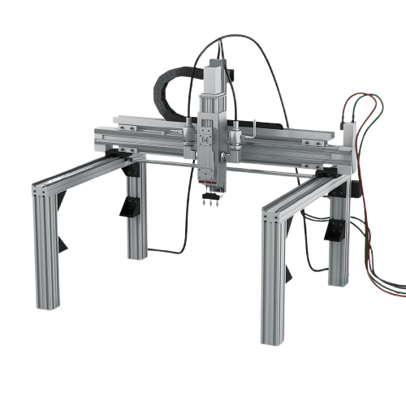
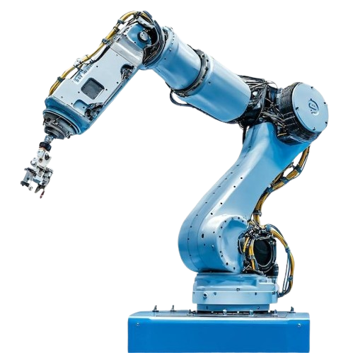
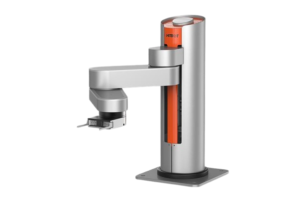

INDÚSTRIA 4.0
ROBÔ CARTESIANO
O robô cartesiano é um manipulador industrial que se movimenta em três eixos lineares (X, Y e Z), formando um sistema de coordenadas cartesianas. A atuação precisa em linha reta facilita o posicionamento repetível, tornando-o excelente para processos automatizados que dependem de alta exatidão.

Como funciona
Cada eixo possui um motor independente que movimenta o robô em linha reta, possibilitando posicionamento extremamente preciso. Na prática, guias, fusos ou correias controladas eletronicamente sustentam o movimento coordenado para atingir a posição desejada.
Aplicações
- Impressão 3D
- Corte CNC
- Paletização
- Soldagem
- Movimentação de peças
- Integração com processos de dosagem
Integração IoT
O robô cartesiano pode enviar e receber dados de produção para sistemas de supervisão e análise. Entre os protocolos mais utilizados estão MQTT, OPC UA, Ethernet/IP e Profinet, permitindo monitoramento remoto, manutenção preditiva e coleta de dados em tempo real.
Características técnicas
- 3 ou mais eixos lineares
- Alta precisão
- Grande capacidade de carga
- Fácil programação
- Baixa manutenção
Modelos comerciais
| Modelo | Fabricante |
|---|---|
| EZS Series | Yamaha |
| H-Bot Cartesian | Festo |
| Cartesian Robot Series | Bosch Rexroth |
Fabricantes
- Festo
- IAI
- Yamaha
- Bosch Rexroth
Características
Funcionamento
1
Recebe as coordenadas e parâmetros de operação do controlador.
2
Move-se pelos eixos X, Y e Z, com atuação em linha reta e posicionamento preciso.
3
Posiciona a ferramenta e realiza a etapa do processo automaticamente.
4
Executa a operação com repetibilidade e registra dados para acompanhamento e manutenção.

